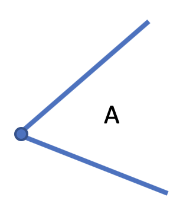
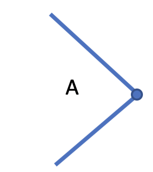
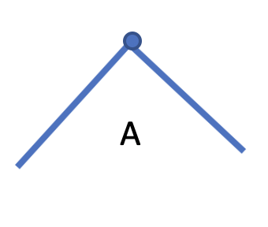
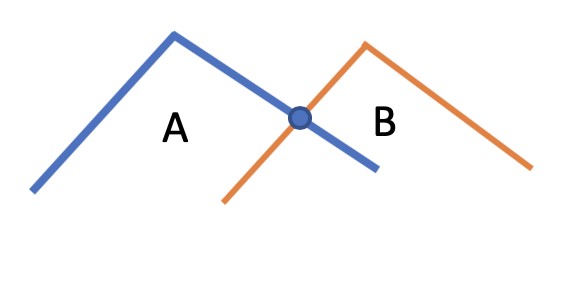
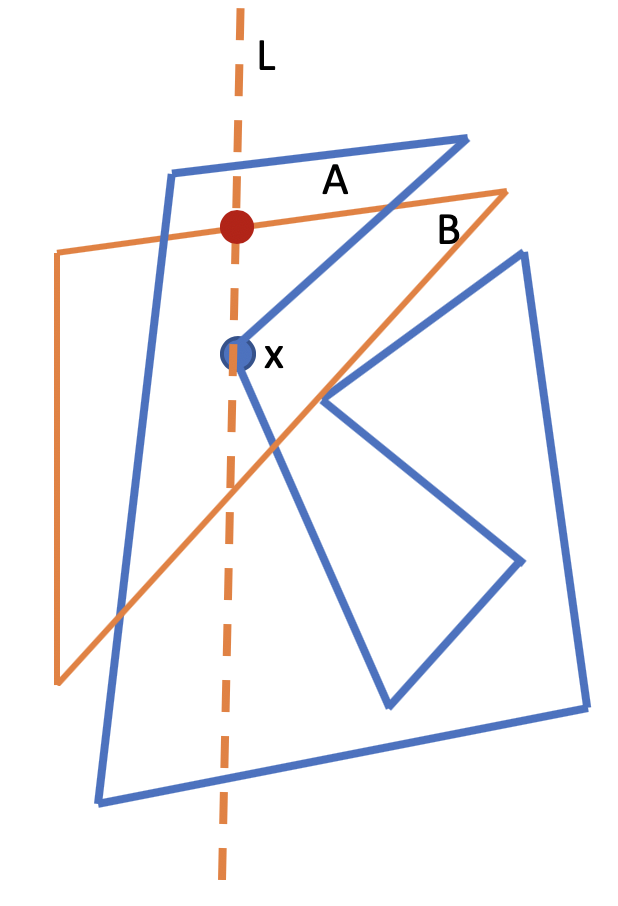
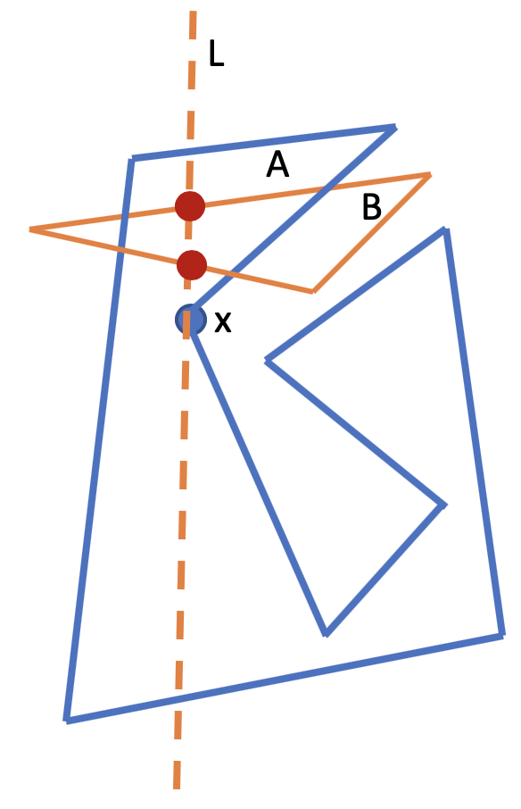
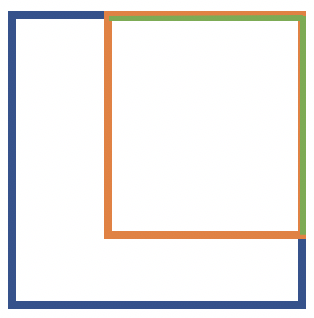
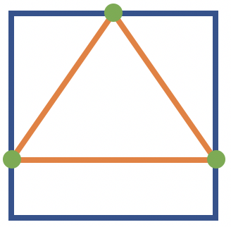
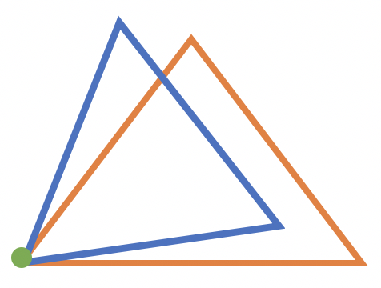
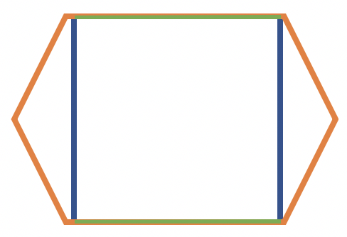

In the previous section we have seen how to perform the Minkowski Sum of two non-convex polygons. The non-convex polygons need to be triangulated and then Minkowski Sum among all pairs of triangles should be calculated. Finally we take the union of all the resulting polygons in order to get a final polygon that represents the Minkowski Sum of the two aforementioned non-convex polygons. The goal of this section is to illustrate the algorithm of performing the union of two non-convex polygons.
Even though the idea of how to perform the union of two polygons can be found in the book "Computational Geometry in C - Joseph O'Rourke", it does not provide key details for the implementation. That is why an entire section explaining how to do it is dedicated here. Moreover the algorithm is not trivial.
The algorithm for calculating the union of two non-convex polygons is a modification of the Bentley-Ottmann sweepline algorithm.
The simple example that we can give about this algorithm is the one used for line segments intersections.
Briefly we can imagine a line \(L\) that sweeps all along a plane in the \(x\) coordinate. This line has information about the order of the segments \({S_1, S_2, ... , S_N}\) by \(y\) coordinate. It stops each time one of the following events happen:
The algorithm uses a priority queue \(Q\) that has all the events that will happen ordered by x coordinate and an AVl tree \(L\) which is a self-balanced binary search tree containing the information about the segments over the line ordered by y coordinate.
Thus when the line encounters the beginning of a segment it inserts it into the \(L\) tree, it calculates if it intersects with the adjacents segments, if yes then it calculates the intersection point and it inserts it into \(Q\). when the line finds the end of a segment it deletes it from \(L\). Finally when the line touches an intersection it swaps the intersecting segments in the \(L\) structure and calculates future intersections with the adjacent segments. The procedure continues until \(L\) and \(Q\) are empty.
Given two simple polygons \(A\) and \(B\) calculate their union \(A \cup B\) which is a polygon containing the shape of both polygons.
For understanding the main idea the problem will be simplified and thus assume the following:
To use the same approach of the sweepline algorithm for segment intersections the edges of the polygons \(A\) and \(B\) are represented as a set of segments.
The algorithm uses two AVL trees: one for the line status \(L\) and another for the events queue \(Q\). All the edges of \(A\) are labeled with the polygon's name to distinguish it from \(B\) and ordered by the smallest \(x\) coordinate. Additionally each edge contains two points associated with the two vertices that connects. Thus each vertex has information about its position: left if the vertex lies on the left-side of the edge and right if the vertex is on the right-side of the edge in the x coordinate. Simetrically for polygon \(B\). Notice that each vertex is associated with exactly two edges. The events queue initializes with all the vertices of both polygons ordered by \(x\) coordinate.
There are four kinds of events:
This concept is ilustrated below:
Left-left event
Right-right event
Left-right event
Intersection event
When a Left-left event happens, both edges are inserted into \(L\). In the case of a Right-right event both edges are deleted from \(L\). For a Left-right event the left edge is deleted and the right edge is inserted. Finally in case of an Intersection event both edges swap its position in \(L\). The future intersections are calculated and put them in the priority queue \(Q\) each time an edge is inserted in \(L\) or an Intersection event occurs.
Additionally, each edge need to be tagged to be on the exterior or interior of the union polygon. Each time a Left-left event is triggered at point \(x\) for polygon \(A\) (or \(B\) respectively), in order to categorize its edges correctly we need to count the edges of polygon \(B\) that are above the point \(x\) intersecting with the vertical line \(L\). If it is an even number then the new edges will be tagged as external or internal otherwise. This is achivable using the line status \(L\) structure. First we insert the edges into \(L\) and then count how many edges that correspond to that other polygon are above the inserted edge iterating through the previous nodes.
An example is shown in the figure above with two polygons \(A\) in blue and \(B\) in orange. The blue point represents the Left-left event and the red points are the intersection points between the edges above \(x\) corresponding to the other polygon and the sweep line, this information is extracted from the \(L\) structure. The figure on the left shows that there is one edge above and thus the new edges are tagged as internal. The figure on the right shows that there are two edges above and therefore the new edges are tagged as external
Edges corresponding to \(x\) point are categorized as Internal
Edges corresponding to \(x\) point are categorized as External
When a Left-right event is triggered the right edges inherits the tag of the left edge. For instance, if the left edge was tagged as internal then the right edge will continue to be internal.
When an Intersection event is triggered the tag of the two edges are changed to the oposite as it is illustrated in the images below.
Moreover the edges need to know information about its intersections. This is made when an intersection is detected, then both edges belonging to the intersection are related to each other together with the point of intersection. Thus, the construction of the Union Polygon is made when the line detects the following events:
An example is shown above. The red point represents the intersection point. The blue point is the last intersection that both edges has seen. The green arrows represent the edges to be taken for the Union Polygon.
Thus the procedure ends when \(L\) and \(Q\) are empty.
Remember that the data structures used for \(L\) and \(Q\) are AVL trees and thus searching, insertion, deletion operations have a time complexity of \(O(log n)\).
The total number of events is \(2n + k\) = \(O(n + k)\) because for each edge we have two events happening: an insertion and a deletion plus \(k\) intersections happening in total and therefore the length of \(Q\) is bounded by the same amount. Moreover each event is inserted or deleted once from \(Q\) and thus the total costs of mantaining \(Q\) is \(O((n+k)log(n+k))\). Additionally \(k=O(n^2)\) and thus \(O(log(n+k)) = O(log(n + n^2)) = O(log n + 2log n) = O(log n)\). Thus the time complexity of \(Q\) is \(O((n+k)log n)\).
The time complexity of \(L\) is O(nlogn) because there are \(n\) edges inserted or deleted in \(O(logn)\). The total number of intersection calls is \(O(n + k)\) because the number of intersections is at most twice the number of events and each event results in at most two new edges adjacencies.
Therefore the time complexity is \(O((n+k)log n)\) and the space complexity is \(O(n+k)\). Chazelle & Edelsbrunner have shown an optimal algorithm whose time complexity is \(O(nlogn + k)\) and Balaban shown that the space complexity is \(O(n)\).
Notice that the union of two polygons can be a polygon with holes. For the robot path planning problem only the external polygon will be considered and therefore the holes will be ignored.
When calculating the Minkowski Sum of two non-convex polygons it is common to have degeneracy cases of the union of two polygons. Some of them are illustrated in the figures below. The green edges or points indicates where the degeneracy occurs.
Two horizontal edges overlapping
Three vertices of one polygon lies over the edges of the other one
Two vertices lie in the same \((x,y)\) coordinates.

Two edges overlapping
In order to deal with them without altering the complexity time of the algorithm the vertices coordinates should be slightly altered when the event is triggered just before processing it. For instance, let's take the right-most image as an example. We process the first Left-left event for one polygon so when the next Left-left event is triggered we should verify if the point is equal to the last-event-occurred point if that is the case then we should make a very little modification to the current \((x, y)\) point coordinates such that the vertex is infinitesimal different to the one of the other polygon (using randomness). This applies to all the degeneracy cases.
Notice that there is a problem with this approach. The resulting Union Polygon would have more vertices than it should have. The problem is resolved iterating through all the vertices of the Union Polygon in counterclockwise (clockwise) order and if the current vertex and the next one are very close to each other then delete them from the Union Polygon, average their coordinates and add this new vertex to the Union Polygon.